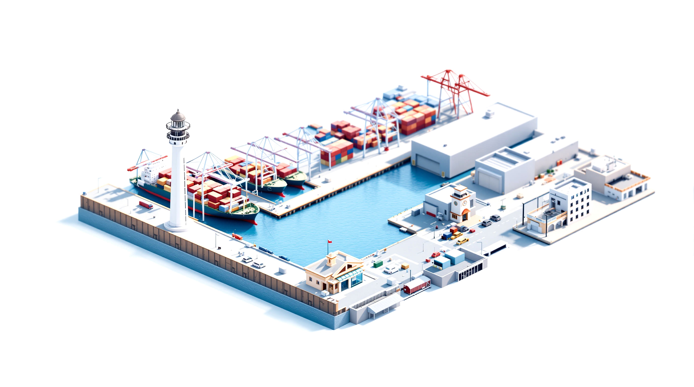
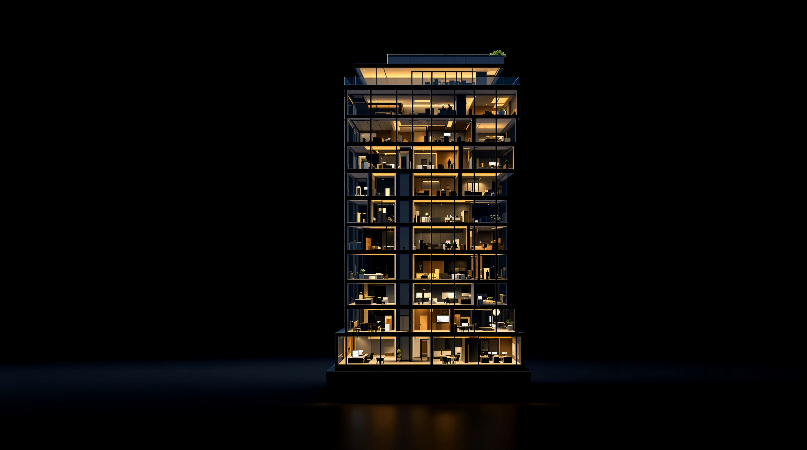
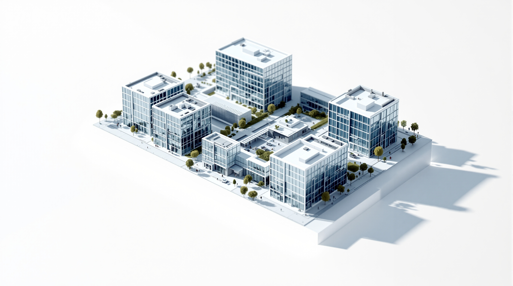

Entwürfe: Plattform für Unternehmensberatungen
Drei Richtungen für das begehbare Zuhause der Beratung. Marke, Motiv und Stimmung sind je Entwurf eigenständig, die Beispielmarke Nordholm & Partner ist Platzhalter.
Das quoroAI-Designsystem · entschieden
Weißer Grund, das Logo-Lila als einzige Akzentfarbe, Clash Display als Schauschrift, Glas als Material fürs Chrom: milchige Flächen schweben über der Lila-Aurora. Tokens in system.css.

Das Gespräch baut den Raum · aktueller Stand
Kein Menü, kein Motiv: Eine Frage, und die Software materialisiert sich als Blaupause, die Wirklichkeit wird. Jonas' Entscheidung vom 2026-08-12.
Der Kundenbereich · komplett
Übersicht (Akte als Cockpit), Unterlagen mit Suche, Leistungsnachweis, Rechnungen mit Beleg, Anmelden mit Zwei-Faktor — alle Flächen, die Kunden der Beratungen sehen.

Beratungs-Cockpit · Vorschlag F · Das Modell
Fotorealistisches weißes Architekturmodell der Beratung: ein Film zeigt, wie der KI-Berater es aufbaut, danach ist es begehbar. Jedes Mandat ein Gebäude, die Zentrale der KI-Berater, der Stift kritzelt aufs Foto.
Beratungs-Cockpit · Vorschlag A · Der Lagetisch
Alle Mandate liegen als Akten auf dem Tisch von oben, Dringendes obenauf, der Stift kritzelt daneben. Ein Klick fährt den Tisch heran und schlägt die Akte auf.
Beratungs-Cockpit · Vorschlag B · Der Maschinenraum
Dem KI-Berater live bei der Arbeit zusehen: Fragen laufen ein, Antworten schreiben sich, und was er nicht darf, wirft er sichtbar auf den Tisch der Beratung.
Beratungs-Cockpit · Vorschlag C · Die Blaupause
Die ganze Beratung als Zeichnung auf Millimeterpapier: je Mandat ein gezeichneter Block, Probleme mit dem Stift eingekreist, ein Klick belichtet den Plan zur echten Oberfläche.
Beratungs-Cockpit · Vorschlag D · Das Aktenregal
Ein Regal lebender Akten, eine je Mandat. Was Aufmerksamkeit braucht, lehnt sich vor und trägt einen Zettel; ein Klick zieht die Akte heraus und klappt sie auf.
Beratungs-Cockpit · Vorschlag E · Die Morgenlage
Das Cockpit ist selbst ein Gespräch: der KI-Berater schreibt der Beratung die Lage, und alles Genannte materialisiert sich daneben. Die Sprache der Kundenseite, von der anderen Seite.
Beratungs-Cockpit · der ruhige Grundriss
Die nüchterne Fassung als Vergleichsmaßstab: was wartet, die Mandate, der KI-Berater in Zahlen und Auftritt, Abrechnung.
Der Hafen · Archiv
Das begehbare Motiv (verworfen): Leuchtturm ist der KI-Berater, jedes Mandat ein Schiff am Liegeplatz.

A · Nachtglut
Dunkles Premium: der Beratungsturm bei Nacht, warme Glut in den Etagen. Das Haus, das nie schließt.

B · Tageslicht
Helles Atelier: weißes Architekturmodell auf Weiß, Kobalt als Akzent. Die ruhige, klare Richtung.

C · Signal
Mutig und laut: der Beratungs-Campus von schräg oben, Signalgrün auf Papierweiß, harte Kanten.